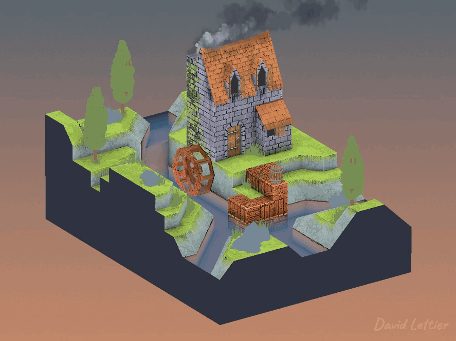
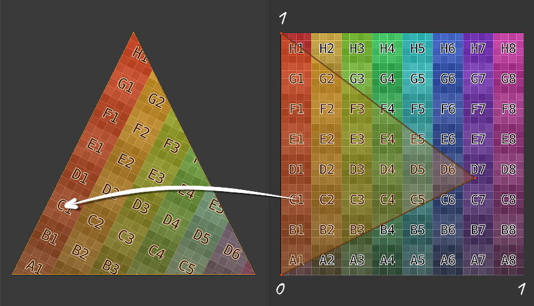

贴图就是使用 UV 坐标将某种颜色或其他向量映射到片元上。
U 和 V 都是在 0 到 1 之间的值。
每个顶点会有对应的 UV 坐标，这个坐标会在顶点着色器中输出。

片元着色器接收插值后的 UV 坐标。
插值的意思是，片元的 UV 坐标是在组成该片元的三角形顶点 UV
坐标之间进行线性插值计算得到的。
#version 150
uniform mat4 p3d_ModelViewProjectionMatrix;
in vec2 p3d_MultiTexCoord0;
in vec4 p3d_Vertex;
out vec2 texCoord;
void main()
{
texCoord = p3d_MultiTexCoord0;
gl_Position = p3d_ModelViewProjectionMatrix * p3d_Vertex;
}这里顶点着色器将纹理坐标输出到片元着色器。
注意这是二维向量，一维是 U，另一维是 V。
#version 150
uniform sampler2D p3d_Texture0;
in vec2 texCoord;
out vec2 fragColor;
void main()
{
texColor = texture(p3d_Texture0, texCoord);
fragColor = texColor;
}片元着色器根据 UV 坐标查找纹理颜色，并输出为片元颜色。
#version 150
uniform sampler2D screenSizedTexture;
out vec2 fragColor;
void main()
{
vec2 texSize = textureSize(texture, 0).xy;
vec2 texCoord = gl_FragCoord.xy / texSize;
texColor = texture(screenSizedTexture, texCoord);
fragColor = texColor;
}在渲染到纹理时，网格是一个与屏幕宽高比相同的平面矩形。
因此，计算 UV 坐标只需要知道：
A) 这个屏幕大小的纹理的宽高，
B) 当前片元的屏幕坐标 x 和 y。
将 x 除以纹理宽度即可得到 U，
将 y 除以纹理高度即可得到 V。
你会在示例代码中见到这种用法。
(C) 2019 David Lettier
lettier.com